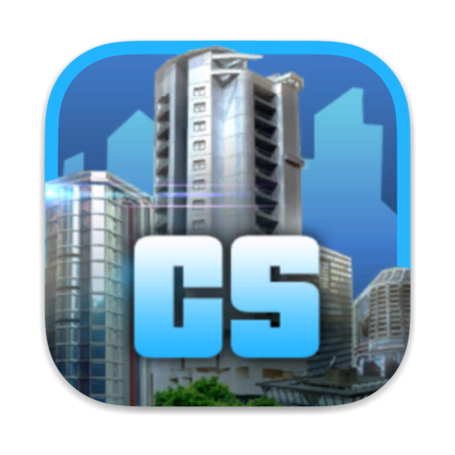

CitySkylines
Cities: Skylines es un videojuego de construcción de ciudades de 2015 desarrollado por Colossal Order y publicado por Paradox Interactive. El juego es una simulación de construcción de ciudades abierta para un solo jugador.
| N | Plataformas | Fecha de Lanzamiento | Desarrolladores |
|---|---|---|---|
| 1 | PC | 15 de Marzo de 2015 | Colossal Order |
| 2 | PlayStation5 | --- | Tantalus Media |
| 3 | XboxOne | -- | --- |
